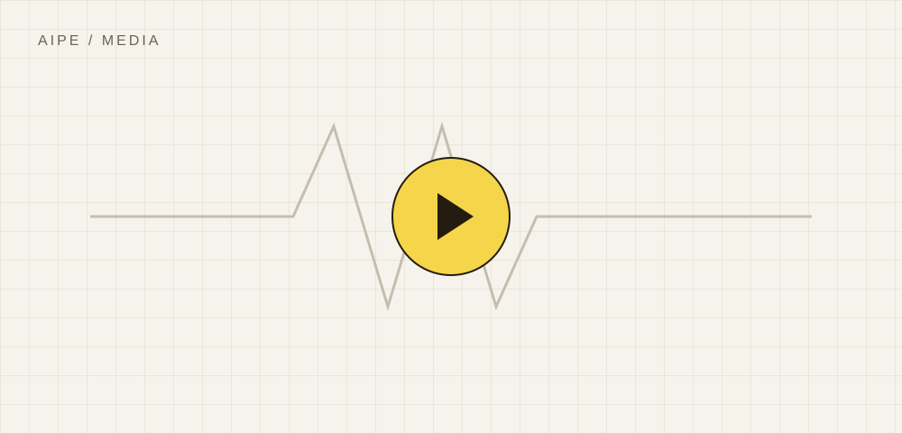

AIPE / KNOWLEDGE SHARING示例模板 · Draft
从想法到实践
工程知识分享
让一份文档承载完整的思考：
有清晰的文字，也有图像、数据和演示。

在这里用三到五句话描述问题、方法与主要结论。先让读者理解这份文档的价值，再展开细节。这是一份版式示例；发布前请替换所有占位内容。
A4 纵向 · 默认比例 100% · 边距采用 CSS 默认值 · 关闭浏览器页眉页脚 · 开启背景图形
让一份文档承载完整的思考：
有清晰的文字，也有图像、数据和演示。
在这里用三到五句话描述问题、方法与主要结论。先让读者理解这份文档的价值，再展开细节。这是一份版式示例；发布前请替换所有占位内容。
一份好的技术文档，应当让读者找到三个答案：为什么做、怎么做，以及结果意味着什么。先描述背景与边界，再交代方法、证据和局限。
这里是普通正文。你可以加入 重点说明、术语强调、单位与公式，例如 P = V × I；也可以通过 参考资料 连接到原始来源。复杂公式可插入本地 SVG，确保离线与打印清晰。
描述你希望解决的问题，说明目标读者和使用场景。写明输入、输出与验收标准。
记录采用的方法与关键假设。区分演示数据、计算结果和真实测量，方便读者复核。
| 模块 | 记录什么 | 推荐载体 |
|---|---|---|
| 背景 | 目标、范围、约束与假设 | 文字 + 示意图 |
| 方法 | 流程、配置与输入参数 | 图文 + 表格 |
| 验证 | 证据、差异与可复现步骤 | 数据 + 视频 |
| 结论 | 关键发现、局限与下一步 | 摘要 + 引用 |
每个重要判断，都应当可以追溯到证据。图表需标明来源，数值需写明单位；尚未验证的内容，应明确标记。
实验过程、操作步骤或仿真动画，都可以嵌入 HTML。网页里播放视频，PDF 里保留封面、要点与可点击链接，让两种阅读方式都能理解内容。

视频插槽 · 请添加自己的 MP4 / WebM观看地址：[发布前填写稳定的 HTTPS 视频地址，并设置为链接。]
[要点一：观众应当看到什么？]
[要点二：关键条件是什么？]
[要点三：结果说明了什么？]
[用文字记录视频中的关键信息。它既是阅读辅助，也让无法播放视频的 PDF 保持完整。]
替换占位文字与视频地址；确认图片和数据的使用权限；检查 PDF 分页、链接、版本号及分享范围。